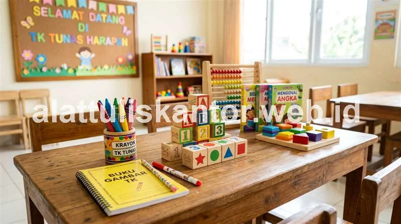

Menjelang tahun ajaran baru, banyak pengelola sekolah dan pengurus koperasi sekolah PAUD maupun TK dihadapkan pada masalah klasik: permintaan buku tulis grosir murah melonjak tinggi secara serentak, sementara pasokan dari toko ritel biasa sering kali terbatas atau harganya melonjak drastis saat dibeli dalam jumlah banyak.
Di sisi lain, kebutuhan pendidikan anak usia dini tidak hanya sebatas buku tulis biasa, melainkan mencakup alat peraga edukatif (APE) dan perlengkapan sensorik yang mendukung kurikulum belajar sambil bermain khas jenjang PAUD/TK. Sebagai mitra pengadaan atk sekolah terpercaya di Indonesia, kami merangkum daftar komprehensif alat peraga edukatif, ATK penunjang motorik, sekaligus solusi strategis bagi koperasi sekolah agar terhindar dari kelangkaan stok buku tulis grosir.
1. Apa Saja Alat Peraga Edukatif dan ATK yang Dibutuhkan Siswa PAUD/TK?
Alat peraga edukatif dan ATK penunjang belajar siswa PAUD/TK terdiri dari tiga pilar utama:
- Alat Tulis Dasar yang Aman (*Child-Safe*): Krayon bersertifikasi non-toxic, pensil kayu tanpa pernis kimia tebal, buku gambar bergaris besar, dan penghapus lunak bebas lateks.
- Alat Peraga Sensorik dan Motorik Halus: Plastisin lilin mainan bebas zat berbahaya, gunting tumpul pengaman anak, dan manik-manik besar untuk latihan meronce.
- Media Belajar Visual dan Interaktif: Flashcard bergambar aneka tema, balok susun (*building blocks*), puzzle geometri kayu, dan poster dinding edukatif kelas.
Kombinasi ketiga kategori ini sangat vital dalam menunjang metode pembelajaran anak usia dini yang menitikberatkan stimulasi koordinasi mata-tangan dan daya imajinasi kognitif secara terstruktur.
Standar Keselamatan Anak Usia Dini: Mengingat anak usia 2–6 tahun masih sering memasukkan jari atau benda ke mulut, seluruh item ATK wajib berstandar Non-Toxic, berujung tumpul (*blunt tip*), dan bebas pewarna tekstil berbahaya.
2. Kategori Alat Peraga Edukatif untuk PAUD dan TK
A. Alat Peraga Motorik Halus
- Plastisin / Lilin Mainan Non-Toxic: Melatih kekuatan otot jari tangan dan pergelangan tangan sebelum anak mulai memegang pensil secara stabil.
- Gunting Khusus Anak (Ujung Bulat/Tumpul): Membiasakan latihan menggunting pola garis lurus dan lingkaran sederhana dengan tingkat keamanan maksimal.
- Manik-Manik Kayu Besar & Tali Ronces: Mengasah fokus konsentrasi serta koordinasi visual motorik bilateral.
B. Alat Peraga Kognitif dan Pengenalan Konsep
- Puzzle Kayu Sederhana: Bertema alfabet, angka 1–10, hewan, dan bentuk geometri dasar.
- Balok Susun Warna (*Wooden Building Blocks*): Mengenalkan konsep gravitasi, keseimbangan ruang, dan pengelompokan warna.
- Kartu Flashcard Edukatif Bergambar: Memperkaya perbendaharaan kosakata, pengenalan anggota tubuh, dan benda sekitar.
C. Media Belajar Visual dan Kreativitas
- Papan Tulis Kecil Anak + Spidol Wipe-Clean: Media corat-coret bebas yang mudah dihapus berulang kali.
- Poster Dinding Edukasi Kelas: Abjad besar, angka, rukun iman/nilai budi pekerti, dan siklus cuaca harian.
- Kertas Origami Warna-Warni: Melatih ketelitian melalui aktivitas melipat bentuk sederhana seperti perahu dan topi.
3. Daftar ATK Dasar Penunjang Belajar Siswa PAUD/TK yang Aman
- Buku Gambar & Buku Garis Besar: Memiliki spasi garis ekstra lebar agar tangan anak leluasa membentuk huruf awal.
- Krayon Minyak Segitiga / Ergonomis: Bentuk segitiga tebal memudahkan genggaman jari anak yang belum matang (*tripod grip*).
- Pensil Kayu 2B Standar Tanpa Lapisan Cat Tebal: Menghindarkan anak dari serpihan cat pernis jika pensil digigit secara tidak sengaja.
- Penghapus Lunak Bebas Lateks (*Dust-Free*): Menghapus bersih tanpa meninggalkan banyak residu debu yang memicu bersin.
- Lem Kertas Stick Non-Toxic: Praktis digunakan tanpa membuat tangan anak lengket berlebihan atau berbau menyengat.
4. Tabel Rekomendasi Paket ATK PAUD/TK Berdasarkan Kebutuhan Kelas
| Jenis Aktivitas | Item yang Dibutuhkan | Estimasi Kebutuhan per Kelas (20–25 Siswa) |
|---|---|---|
| Menggambar & Mewarnai | Krayon non-toxic, buku gambar A4 tebal | 1 set krayon per siswa, buku gambar 2–3 pcs/bulan |
| Latihan Motorik Halus | Plastisin non-toxic, gunting tumpul, manik kayu | 1 set per siswa / shared pool bertahap |
| Pengenalan Kognitif | Puzzle kayu, balok susun, kartu flashcard | 3–5 set untuk digunakan bergiliran per kelas |
| Media Belajar Kelas | Papan tulis mini, poster dinding edukasi | 1–2 unit per kelas untuk jangka panjang |
5. Solusi bagi Koperasi Sekolah yang Kekurangan Pasokan Buku Tulis Grosir
Lonjakan permintaan buku tulis saat masa orientasi siswa baru sering kali membuat koperasi kehabisan pasokan. Terapkan 4 strategi pengadaan teruji berikut:
- Pesan Jauh Sebelum Musim Puncak Permintaan: Lakukan pemesanan 2 hingga 3 bulan sebelum tahun ajaran baru (bulan April–Mei). Distributor masih memiliki kapasitas stok penuh dan harga belum mengalami kenaikan musiman.
- Konsolidasikan Pesanan Antar Unit Sekolah / Yayasan: Jika yayasan mengelola unit PAUD, TK, SD, hingga SMP, gabungkan total kuota buku tulis ke dalam satu *purchase order* besar untuk mencapai kuantiti minimal grosir (*MOQ*) pabrik.
- Jalin Kemitraan Tetap dengan Distributor Resmi: Pelanggan tetap distributor selalu mendapat prioritas alokasi stok (*buffer allocation*) saat stok nasional menipis di bulan Juli.
- Gunakan Kontrak Pasokan Tahunan dengan Harga Terkunci: Kunci harga di awal tahun anggaran sehingga koperasi terlindung dari fluktuasi inflasi kertas.
6. Tabel Perbandingan Strategi Pengadaan Buku Tulis Grosir
| Strategi Pengadaan | Kelebihan Utama | Pertimbangan Pelaksanaan |
|---|---|---|
| Pesan Jauh-Jauh Hari (H-3 Bulan) | Harga stabil, stok 100% terjamin aman | Perlu perencanaan anggaran kas awal |
| Konsolidasi Antar Unit Yayasan | Mencapai MOQ pabrik, diskon volume besar | Perlu sinkronisasi data antar kepala sekolah |
| Kemitraan Distributor Sepanjang Tahun | Prioritas pasokan utama saat barang langka | Komitmen belanja rutin semesteran |
| Kontrak Tahunan Harga Terkunci | Bebas risiko lonjakan harga musiman | Memerlukan estimasi kuota tahunan yang cermat |
7. Mengapa Kualitas & Sertifikasi Keamanan Tidak Boleh Dikorbankan?
Meskipun koperasi sekolah dituntut menjaga harga tetap terjangkau bagi para orang tua wali murid, standar keamanan fisik dan kimiawi alat peraga edukatif tidak boleh ditawar:
- Bebas Kandungan Logam Berat: Krayon dan cat poster murah tanpa sertifikasi sering kali mengandung residu timbal (*lead*) dan phthalates yang berbahaya bagi perkembangan saraf anak.
- Sudut Bahan Kayu / Plastik Halus: Balok susun dan puzzle kayu wajib melalui proses amplas halus dan menggunakan cat berbahan dasar air (*water-based paint*).
- Ukuran Komponen Tidak Terlalu Kecil: Menghindari risiko tersedak (*choking hazard*) pada anak kelompok bermain (usia 2–3 tahun).
Studi Kasus: Koperasi Yayasan Mengatasi Kelangkaan & Hemat Anggaran 15%
Sebuah yayasan pendidikan swasta di Jawa Tengah yang menaungi 4 unit sekolah (2 unit PAUD/TK, 1 SD, dan 1 SMP) sebelumnya selalu mengalami kesulitan mendapatkan pasokan buku tulis bermerek dan krayon non-toxic dalam jumlah ratusan pak saat mendekati bulan Juli.
Pembelian darurat di toko retail eceran membuat margin koperasi menipis dan harga jual ke orang tua menjadi kurang kompetitif.
Solusi Terpadu: Yayasan menerapkan sistem konsolidasi pesanan satu pintu melalui layanan pengadaan atk sekolah kami 3 bulan lebih awal. Kami menyediakan paket bundling buku tulis berlogo khusus sekolah dipadukan dengan set alat peraga edukatif berstandar SNI.
Dampak Positif: Koperasi berhasil memperoleh efisiensi harga grosir hingga 15% dibanding tahun sebelumnya, terhindar 100% dari kelangkaan stok, dan seluruh paket siswa sudah terdistribusi rapi sebelum hari pertama masuk sekolah.
8. Perbedaan Kebutuhan Alat Peraga: Siswa PAUD vs Siswa TK
- Jenjang PAUD (Usia 2 – 4 Tahun): Menitikberatkan eksplorasi sensorik kasar—balok berukuran besar, plastisin lembut ekstra tebal, krayon genggam bulat (*palm-grip*), dan buku gambar polos tanpa garis.
- Jenjang TK (Usia 4 – 6 Tahun): Mulai memasuki tahap pra-menulis dan pra-membaca—puzzle 12–24 potong, flashcard huruf dan angka, buku garis kotak besar, gunting pola, dan pensil 2B untuk pembentukan huruf proporsional.
Untuk melihat katalog lengkap alat peraga edukatif berstandar aman, buku tulis grosir murah, dan pengadaan atk sekolah terpadu, silakan kunjungi halaman katalog produk kami.